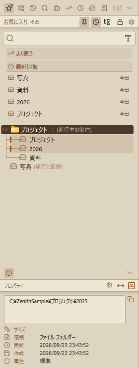
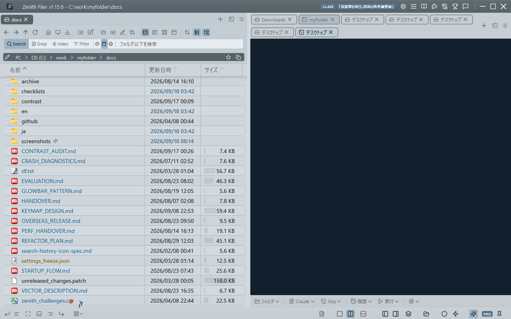
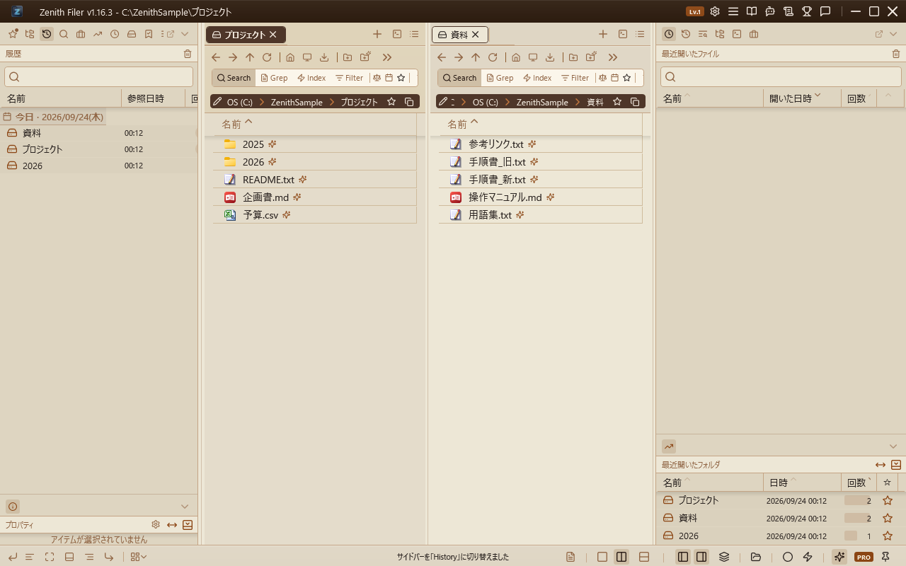
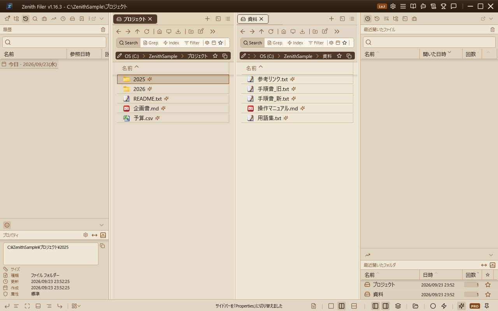
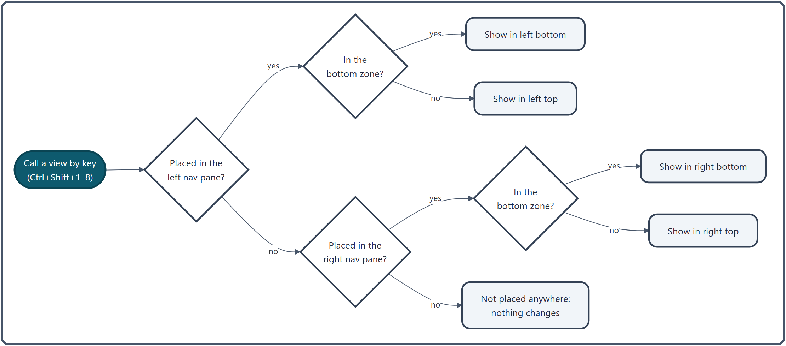

Nav Pane¶
The areas on either side of the file list that hold "views". Choose from about 20 views, such as Favorites, the tree, History and the terminal, put the ones you use in whichever slot you like, and call them up with a key.
What you can do¶
| To do this | Do this |
|---|---|
| Switch views | Click an icon in the icon bar, or Ctrl + Shift + 1–8 |
| Show or hide a nav pane | Ctrl + Shift + [ (left) / Ctrl + Shift + ] (right) |
| Stack two views | Drag an icon to the top or bottom edge of the view area |
| Move a view to the other side | Drag its icon to the other icon bar, or to the window edge |
| Rearrange everything at once | ∨ at the right end of the icon bar → "Edit All Pane Slots", or a preset (Ctrl + Shift + J) |
| Put it in its own window | The detach button |

There is a nav pane on the left and on the right, and each can be split into a top and a bottom zone, so up to four slots can show different views. Out of the box, the left is a single tier showing Favorites, and its icon bar holds only the 7 views an ordinary file manager has (Favorites, Tree, History, Recent Files, Drives, Index Search and Properties); the right has Recent Files on top and Recent Folders below.
How to use it¶
The views¶
| View | Default key | What it does | More |
|---|---|---|---|
| Favorites | Ctrl+Shift+1 |
Register and open the folders and files you use often | Favorites |
| Tree | Ctrl+Shift+2 |
Browse drives and the folder hierarchy | "Tree" below |
| History | Ctrl+Shift+3 |
Look back at the folders you opened, by date | "History" below |
| Index Search | Ctrl+Shift+4 |
Manage the folders index search covers | Index Settings |
| Working Set | Ctrl+Shift+5 |
Save and recall combinations of tabs | Working Sets |
| Recent Folders | Ctrl+Shift+6 |
Your most-opened folders, most first | "Recent folders and files" below |
| Recent Files | Ctrl+Shift+7 |
Up to 100 files you opened | "Recent folders and files" below |
| Properties | Ctrl+Shift+8 |
Details of what you selected | "Properties" below |
| Terminal / Terminal 2 | — | The built-in terminal | Terminal |
| Sites | — | Register and open FTP and SFTP servers | FTP/SFTP |
| Search Presets / Search History | — | Recall saved and past searches | Search Presets |
| Tab Management | — | Reorder, move and close the A/B tabs in one place | "Other views" below |
| Preview | — | Always show the selected file's contents | "Other views" below |
| Drives | — | The list of drives | — |
| Macros | — | Run a series of steps at once | Macros |
| AI Manual / AI Folder Analysis / AI Tab Management | — | Ask the AI, or have it suggest how to tidy a folder or your tabs | AI Features |
You can change the keys in Settings → Shortcut Keys, including for views that have no default key.
App settings (Control Deck) open not from the nav pane but from the gear icon in the title bar (Ctrl + Shift + O). They open in their own window, which you can move and resize and which remembers its position. The main window is not dimmed behind it, so you can compare theme changes on the spot. Close it with Esc or × (see All App Settings).
Switching views¶
- Icon bar: the icons of the views placed on a nav pane are lined up above it. Click one to switch to that view. When they do not all fit in the width of the nav pane, a
≫appears at the right end. Click it to list the views that did not fit, and pick one to switch to it (the view being shown is highlighted). The lower icon bar works the same way. The∨next to it does not show more icons; it opens the menu for managing where views are placed. If you open a view that is on neither icon bar with a key, the Command Palette or the Ring Launcher, it is added to the end of the left icon bar and opened. - Keys:
Ctrl + Shift + 1–8switch the slot where that view is placed (see "How it works"). Pressing the key of a view placed on neither nav pane changes nothing. - Moving keyboard focus:
F6/Shift + F6move keyboard input between the nav panes and Panes A and B.
Each view shows its name at the top, with that view's buttons (the tree lock, the button that clears History and so on) on the right of the heading. Views that use AI carry a purple AI badge, and Pro features an orange Pro badge (the badge dots are off at first; turn them on with General → Show AI / Pro badges).
Arranging views¶
- Stack two views: drag an icon and drop it on the top or bottom edge of the view area to put it in that zone. Drop it in the middle to remove the split. The top zone always keeps at least one view.
- Swap sides: drag an icon to the other icon bar. If there is no right nav pane yet, dropping near the right edge of the window (within 60px) creates one.
- Reorder: drag icons left or right within an icon bar.
- Rearrange everything at once:
∨at the right end of the icon bar → "Edit All Pane Slots" opens a cross-shaped layout window where you decide what goes in each of the four slots (see Presets). - Fit the bottom zone to its content (dock): the button at the right end of the bottom zone's heading fixes that zone to exactly the height of its content and gives the rest to the top zone. Handy for views with a set height, such as Properties.
- Auto-hide: turn on "Auto-hide" for either side under General, and that nav pane hides when you are not using it and comes back when the mouse reaches the window edge (10px). The pin in the heading keeps it out.
Detaching and arranging windows¶
Detaching the nav pane (floating window): The detach button at the top right of the nav pane (left of the ∨) turns the nav pane into a standalone window. While it is detached, the space it occupied in the main window collapses, so the A and B panes get that width back. Move it to a second display and you can keep the nav pane in view without giving up any file-list space. The left and right nav panes detach independently, and a running terminal keeps its session across the move. The window's position and size are remembered, and if you quit with a pane detached, it comes back detached next time. To bring it back, press the button in the same spot in the detached window (its icon changes to a pane shape), or simply close the window. While a pane is detached, its show/hide toggle shows and hides that window instead.
Arranging them side by side (snapping and docking): A detached window snaps to screen edges and corners like a magnet, exactly as the main window does. Windows also snap to each other, so you can line up the left nav pane, the main window with its A and B panes, and the right nav pane with no gaps between them. Joining an edge lines up the top or bottom edges at the same time, so the row comes out even. Once windows are joined, dragging any one of them moves the whole set. To pull a single window out, hold Alt while dragging — a reminder appears on screen when you start moving a joined set. Snapping is controlled by Settings → General → "Snap window to screen edges". Crossing between displays with different scaling can leave a gap, since the windows change size as they go.
Presets¶
Ctrl + Shift + J (or the nav pane layout presets at the bottom right of the status bar) switches the whole nav pane layout at once. Four are built in, Standard, Compact, Dual and Author's Layout. Standard is the same layout as when the app is first started (7 views on the left nav pane, shown as a single tier with Favorites; History, Recent Files and more are placed on the right nav pane, which starts closed); pick it to get back to the original layout from another preset. Open the right nav pane with the button at the bottom right of the status bar (or the key assigned to "Toggle Right Pane"). You can also save the current layout under a name. Presets cover only the arrangement and width of the views; they never touch your favorites.
Tree¶

A view for browsing drives and the folder hierarchy. At the top level are the drives that are ready (those that answer within 0.5 seconds), devices such as phones and cameras, and finally the Recycle Bin.
| Action | What happens |
|---|---|
| Click | Selects only (nothing is shown in a pane) |
| Click ▶/▼ | Expands or collapses only (nothing is shown in a pane) |
Double-click the folder name / Enter |
Shows it in the active pane (the tree stays as it is) |
Ctrl + double-click |
Shows it in the other pane (switches to two panes if needed) |
Shift + click / Shift + Ctrl + click |
Shows it with large icons in the active / the other pane |
| Right-click | "Show in A Pane", "Show in B Pane", "Rename", "Delete" ("Refresh" on empty space) |
- Follows the current folder: while the tree is shown, it expands and selects the folder open in the active pane (also when you switch tabs).
- Keeps up with file operations: folders created, renamed, moved or deleted in the app appear in the tree right away.
- Recycle Bin: double-click,
Enteror right-click "Open in Explorer" opens File Explorer's Recycle Bin (not in an app pane). It cannot be expanded, renamed, deleted or dragged. - Lock: the padlock in the heading stops moving by drag within the tree, renaming, deleting, and drops from the file list. If you try one of these, the status bar says it could not be done while locked and the area near the padlock flashes for about 3 seconds (no pop-up). Click the padlock to unlock at once. The lock is kept the next time you start the app, and is separate from the Favorites lock.
- For the rules on dropping onto the tree, see Drag & Drop.
History¶

The folders you opened, grouped by date, newest first. Only today's group starts expanded, and groups you open or close yourself stay that way.
- Double-click (or
Enter) opens a folder in the active pane. Right-click offers "Show in A Pane", "Show in B Pane" and "Remove". - Typing in the search box removes the date grouping and filters the list: entries whose name or path contains what you typed, and names within one or two typos of it. Only the 50 newest entries loaded into the list are searched.
- The trash button to the right of the heading clears the whole history (you are asked first).
Recent folders and files¶
- Recent Folders: the 10 folders you opened most, most first (Name, Date, Count and ☆ columns). Folders on the exclusion list in General are left out. ☆ adds one to Favorites.
- Recent Files: up to 100 files opened in Panes A and B. Sort by the column headings (Name, Opened, Count) and filter by name or path with the search box. Right-click offers "Open again", "Open containing folder" and "Show parent folder in A/B Pane". The heading's button clears the list (without asking).
Properties¶

-
Properties view: The "Properties" drop item in the nav pane displays properties (full path, size, type, modified date, created date, attributes) for the selected file or folder in the A/B pane.
The full path field has a fixed 6-line height; longer paths can be scrolled. A copy button allows copying the path to the clipboard.
Selecting a shortcut (
.lnk) adds a "Target" field showing the target's full path, with its own copy button. A warning is shown if the target can no longer be found.When no item is selected, it automatically shows the active pane's current folder properties.
-
Startup greeting: For 5 seconds after launch, a time-based greeting message (6 patterns: morning, late morning, afternoon, etc.) is displayed, then fades out to show current folder properties.
-
AI greeting: Open settings via the gear icon in the Properties header and enable "Generate message with AI" to have AI create an original motivational message matching the time of day.
The message is output in the language matching your app's language setting.
While waiting for the AI response, "Preparing..." is shown, then the message smoothly fades in and displays for 5 seconds. - Greeting tone adjustment: Adjust the AI greeting tone across 7 levels (casual to formal). Configure this from the Overview tab in AI settings. - Settings are accessible from the gear icon in the Properties view header and are restored on next launch.
Other views¶
- AI Folder Analysis: A view where AI analyzes the focused pane's current folder and suggests organization actions (folder creation, file moves, renames).
- Analyze: Press the "Analyze" button to send all items in the folder (name, type, size, date) to AI for organization suggestions. You can also type additional instructions (e.g., "organize photos by year and month") in the text input.
- Proposed Actions: AI proposals are displayed as a checklist. Three action types are available: folder creation, file move, and rename, each individually selectable. The "Select All" button toggles all at once.
- Execute: Press "Execute" to batch-execute selected actions. A confirmation dialog appears before execution, and GlowBar shows progress.
- Undo: Executed operations can be undone all at once with Undo (Ctrl+Z).
- Safety: Validates that paths are within the current folder, checks for name conflicts at destinations, and verifies the folder path matches between analysis and execution time.
-
AI Manual: A chat-style help view where you can ask questions about the app in natural language.
Answers are generated by automatically searching the manual. Responses are rendered in Markdown (headings, bold, bullet lists, code blocks), and long answers are split into multiple bubbles by section. Beneath each answer, the articles it drew on are listed; clicking one opens that article in the manual.
Retains conversation history (last 3 exchanges). Pro feature (free version: 3 uses/day).
-
AI Tab Management: A view that scores tab usage patterns (access frequency, dwell time, recency) and suggests tab organization.
Visualizes each tab's status with lock recommendation (green indicator) / close recommendation (orange indicator). "Apply all" enables batch operations.
Also performs working set auto-detection (A+B pane co-occurrence patterns) and related folder suggestions (detected from co-occurrence history). Each suggestion type can be individually toggled ON/OFF. Pro feature (free version: 3 uses/day).
-
Tab List View: Lists all tabs from Pane A and Pane B, with drag-and-drop reordering.
Tab activity (time spent) is visualized with progress bars, and AI-recommended tabs are marked with dot indicators. If the current tab layout matches a saved working set, a badge is displayed and you can save it with one click.
In single-pane mode, only Pane A tabs are shown. Each pane header includes a + button for creating new tabs. Double-clicking empty space in a list adds a tab to that pane as well — the same gesture the pane tab bars use. Tabs can also be closed with a middle click.
Tabs can also be dragged from the pane tab bars into the Tab List view for reordering and cross-pane moves. You can drop folders from Explorer or the nav pane (favorites, history, frequent folders, tree) to create new tabs. - Preview View: A persistent preview pane for the currently selected file. Supports images, text, PDF, Markdown, SVG, and video thumbnails. Code files are displayed with syntax highlighting via AvalonEdit, and Markdown files are rendered. For image files, EXIF metadata (capture date, camera info, etc.) is also shown in the properties pane.
How it works¶
Where a view appears when you call it by key¶

- Views are looked up left, then right, and shown in the zone (top or bottom) where they are placed on the side where they are found. If a view is placed on neither side, nothing changes.
- A view appears in only one place at a time. If the same view is placed on both sides, calling it moves it to that side and leaves the other slot empty. Terminals are the exception: each side has its own terminal, and "Terminal 2" lets a side show one on top and one below (up to four in all).
- Pressing the key while that nav pane is hidden does not bring it back (use
Ctrl + Shift + [/]).
When views are created¶
- Only five views are created at startup: Favorites, Tree, History, Index Search and Properties.
- The others are created one at a time once the window is up and the app is idle, so startup stays fast. Terminals and Sites are created the first time you open them.
- A list's contents (History, Recent Folders and so on) are reloaded the first time it is shown or after they change; several changes in quick succession are combined into one reload within 0.5 seconds.
How the history is kept¶
- Every time you open a folder, how many times and when you opened it are recorded. Back / Forward and reloading search results do not count.
- The history is tidied at most once a day: entries older than a month, broken paths that can't be opened, and anything beyond the 500 newest are removed.
- The same record feeds Recent Folders and the ranking of the Favorites "Frequent" section. Clearing the history empties those too, for the time being.
Related¶
- Favorites — the Favorites view
- Terminal — the terminal view
- Presets — deciding the nav pane layout at once
- Navigation — moving around in a pane
- Drag & Drop — dropping onto the tree and Favorites